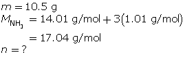
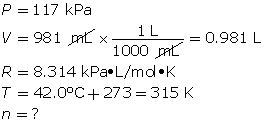
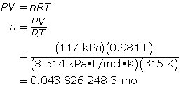
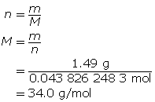

Module 3—Behaviour of Gases
 Read
Read
Real vs. Ideal Gases
In Lesson 1 you completed a lab investigating the relationship between pressure and volume of two gases. Did you observe any difference in the way the gases behaved? If you look back on your data and graphs, you will notice that the data collected for the two gases are almost identical.
This lab demonstrated that as long as temperature was constant, and the gases were compressed to similar volumes, they produced the same pressure. As you learned in this module, the pressure exerted by a gas is a direct result of its motion. When gases produce equal pressures when all other conditions are similar, it means that the degree of motion of the two gases is the same.
In Unit A you learned about intermolecular forces and how attractions between atoms and molecules in a system can influence boiling point. You might ask whether the difference in intermolecular forces between these two gases tested would alter their behaviour and cause a difference in the observed pressure of each gas.
Clearly the data from your experiment shows this is not the case, and that the gases are behaving independent of these kinds of forces under the conditions of the experiment. When gases do not appear to be influenced by forces between them, along with other characteristics, they exhibit ideal behaviour.
Read “The Ideal Gas Law” on pages 172 through 175 in your textbook. You will find out what other conditions make the behaviour of a gas “ideal.” In this section you will also learn about the development of the ideal gas law, a relationship among all the variables you have studied in this unit: pressure, volume, temperature, and moles of gas.
Carefully work through “SAMPLE problem 4.4,” the “COMMUNICATION example” on page 174, and the following examples.
Example 4
How many grams of oxygen gas are there in a 60.0-L tank at 25.0 °C when the pressure in the tank is 12.2 MPa (MPa = megapascals)?
First, determine the number of moles using the ideal gas law.
Now, determine the number of grams of oxygen.
The mass of O2(g) is 9.45 × 103 g or 9.45 kg.
Example 5
Experiments show that a reaction will produce 12.7 g of CO2(g). What volume of CO2(g) should be expected at a new temperature of 40.0 °C and 120.0 kPa?
First, find the number of moles of carbon dioxide gas.
Now, determine the volume using the ideal gas law.


A volume of 6.26 L of CO2(g) should be expected.
As you can see by these examples, using the ideal gas law to predict the pressure, volume, or mass of gas can be very useful. One of the most practical reasons for using this relationship is to ensure the safety of people working with compressed gases and to ensure that the capacity of containers is not exceeded.
 Self-Check
Self-Check
SC 7. What mass of neon gas should be introduced into an evacuated 0.88-L tube to produce a pressure of 90 kPa at 30 °C?
SC 8. When an air bag is activated in a collision, sodium azide rapidly decomposes to produce nitrogen gas. Chemical engineers carefully choose the quantity of sodium azide to produce the required chemical quantity of nitrogen gas. Use the ideal gas law to predict the chemical quantity of nitrogen gas required to fill a 60-L air bag at a pressure of 233 kPa and a temperature of 25 °C.
SC 9. At what temperature does 10.5 g of ammonia gas exert a pressure of 85.0 kPa in a 30.0-L container?
SC 10. Use the ideal gas law to determine three ways to reduce the volume of gas in the shock absorber (cylinder and piston) of an automobile.
SC 11. A 1.49-g sample of a pure gas occupies a volume of 981 mL at 42.0 °C and 117 kPa.
- Determine the molar mass of the compound.
- If the chemical formula is known to be XH3, identify element X.
Self-Check Answers
SC 7. First, find the number of moles using the ideal gas law.


Finally, determine the mass of the neon.

There should be 0.63 g of neon introduced to the tube.
SC 8.


To fill the air bag, 5.6 mol of nitrogen gas is needed.
SC 9. First, determine the number of moles of ammonia.


Now, calculate the temperature using the ideal gas law.

SC 10. The volume of a gas in an air (pneumatic) shock absorber can be reduced by decreasing the chemical amount of gas, by lowering the temperature, or by raising the pressure.
SC 11.
- First, determine the number of moles using the ideal gas law.


Now, determine the molar mass.

-
Since the formula is XH3, the molar mass of the three hydrogen atoms can be subtracted from the molar mass of the compound.
34.0 g/mol − 3.03 g/mol = 31.0 g/mol
This is the molar mass of the missing element. The element that has the molar mass closest to 31.0 g/mol is phosphorus. Therefore, the formula for the compound is PH3.